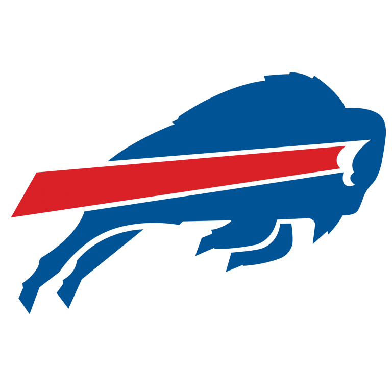

Championship Sunday is always one of the best days in any NFL season, but this year, it could be particularly good. It is the first time in NFL history that the 4 QBs starting in the Conference Championships all threw for over 4000 yards during the regular season. It also features two very contrasting QB matchups. Aaron Rodgers, 37 years old, will take on Tom Brady, 43 years old, in a battle of two of the best QBs in NFL history, while Patrick Mahomes and Josh Allen, both under 26 years old, will face off in the later game on Sunday. With plane tickets to Tampa Bay on the line, which of these QBs can lead their team to Super Bowl LV?
 |
(5) Tampa Bay Buccaneers at Green Bay Packers (1) |
 |
|---|
It's pretty common knowledge around the NFL that the Green Bay Packers are virtually unbeatable at Lambeau Field in January, but if there's one man in the league who could go into the frozen tundra and come out with a win, it's Tom Brady. He has been in this kind of situation so many times during the playoffs and has come through more often than not, but it isn't often that Brady faces a QB playing better than him in the playoffs, which he will this week, in his first playoff meeting with Aaron Rodgers.
Rodgers has been torching defenses left, right, and center all season, and the offense's performance against the top-ranked defense last week following a bye was incredible, as they gained 484 total yards against a team that allowed just 281.9 YPG during the regular season. Even though the Buccaneers defense played exceptionally well last week against the Saints, it is very hard to see how they can stop or even slow down the Packers offense, which means Tom Brady and his offense will need to keep up.
That, in itself, might also be a problem. Yes, Tampa Bay scored 30 offensive points last week, but 21 of them came off turnovers, and the Packers offense is just not one that turns the ball over very often (only 11 giveaways this season - fewest in NFL). Okay, Rodgers did throw 2 picks in a 38 - 10 loss against the Bucs when they met in Week 6, but I don't think history will repeat itself, because he and the offense are playing much better at this moment.
Tampa Bay is also going in slightly short-handed on the offensive side of the ball, with Antonio Brown officially out of the game. Brown has been an excellent option for Brady since he joined the Bucs, and he will be missed. The Packers defense is also no joke, especially at Lambeau, and they have one of if not the best CB in the league in Jaire Alexander, who held Mike Evans to 0 catches in Week 6. It is just hard to see how the Buccaneers can establish any kind of control in what will be a difficult environment, without much of a running game and against an offense that is firing on all cylinders. Packers will advance.
|  | (2) Buffalo Bills at Kansas City Chiefs (1) |
 |
|---|
Chiefs fans got the best news ever on Friday, when Patrick Mahomes revealed he was no longer in the NFL's concussion protocol and as such would be available for Sunday's AFC Championship Game against Buffalo. Make no mistake, this game is about one thing and one thing only: offense. The Bills might have held Baltimore to only 3 points in last weekend's Divisional game, but the Ravens really did beat themselves and made a lot of unforced errors. In other words, they choked. The Chiefs will do no such thing this week.
There are a few misconceptions about the Chiefs that need addressing. Firstly, they may have won 8 straight games by 6 points or fewer, but does that mean that they're not good? No, because most of those games they were in complete control until the last minute or so. Secondly, the offense has failed to score more than 22 points in 3 straight games. Does that mean the offense is performing poorly? No. Last week they had 19 points at the half before Mahomes left the game, and in Week 17 against the Chargers they didn't play their starters.
The good news for Buffalo is that you can't beat the Chiefs with defense. You have to beat them in a shootout, which is perfect for the Bills because they have been putting up a lot of points all season. There is a possibility that Mahomes isn't 100% heading into the game because of the concussion he suffered last week, and if that is the case, I think Buffalo will outscore Kansas City and advance. If however, Mahomes is fully healthy, then I like the Chiefs to win, and weirdly enough, I say that because of Kansas City's defense.
If Mahomes is 100%, then it will be a very close game throughout, and in close games, it usually comes down to which defense can get a stop at the right time. The Chiefs defense hasn't been superb this year, particularly in the redzone where they are the worst in the league, but they have big time playmakers that usually step up when they need to, like Tyrann Mathieu, Daniel Sorensen, and Chris Jones. Even though the Bills' defense has improved since the beginning of the season, I think the Chiefs offense has way too many elite weapons for them to make a big time stop.
Being able to successfully cover Travis Kelce and Tyreek Hill at the same time is a very difficult thing to do, and that's only the tip of the iceberg for the Chiefs. I think this game is going to be super fun to watch and it is more than likely going to be a shootout from start to finish, but someone's defense will have to come up with a play, and I just feel like it is so much more likely that it's Kansas City who gets that stop rather than Buffalo.